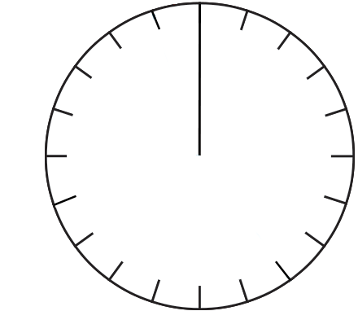

- 문제 1
- 문제 2
- 문제 3
- 문제 4
- 문제 5
-
수경이네 학교 6학년 학생들의 장래 희망을 조사하여 나타낸 표입니다. 전체 학생 수에 대한 장래 희망별 학생 수의 백분율을 구하여 표를 완성해 보시오.
장래 희망별 학생 수장래 희망 가수 의사 선생님 기타 합계 학생 수(명) 80 60 50 10 200 백분율(%) 4030255100 -
전체 학생 수에 대한 장래 희망별 학생 수의 백분율을 나타낸 표를 보고 백분율과 학생 수 사이의 관계를 써 보시오.
장래 희망별 학생 수장래 희망 가수 의사 선생님 기타 합계 학생 수(명) 80 60 50 10 200 백분율(%) 40 30 25 5 100 예학생 수를 2로 나누면 백분율과 같습니다.
-
1번 문제에서 구한 수경이네 학교 6학년 전체 학생 수에 대한 장래 희망별 학생 수의 비율을 원그래프로 나타내어 보시오.
장래 희망별 학생 수 0255075가수
0255075가수
(40 %)의사
(30 %)선생님
(25 %)기타(5 %) -
연수네 학교 6학년 학생을 대상으로 형제 수를 조사하여 나타낸 표입니다. 표 안에 알맞은 수를 써 보시오.
형제 수 0명 1명 2명 3명 이상 합계 학생 수(명) 45 60 15 30 150 백분율(%) 30401020100 -
4번 문제에서 구한 6학년 학생들의 전체 학생에 대한 형제 수별 학생 수의 비율을 원그래프로 나타내어 보시오.
6학년 학생들의 형제 수0255075 0명
0명
(30 %)1명
(40 %)2명(10 %)3명 이상(20 %)